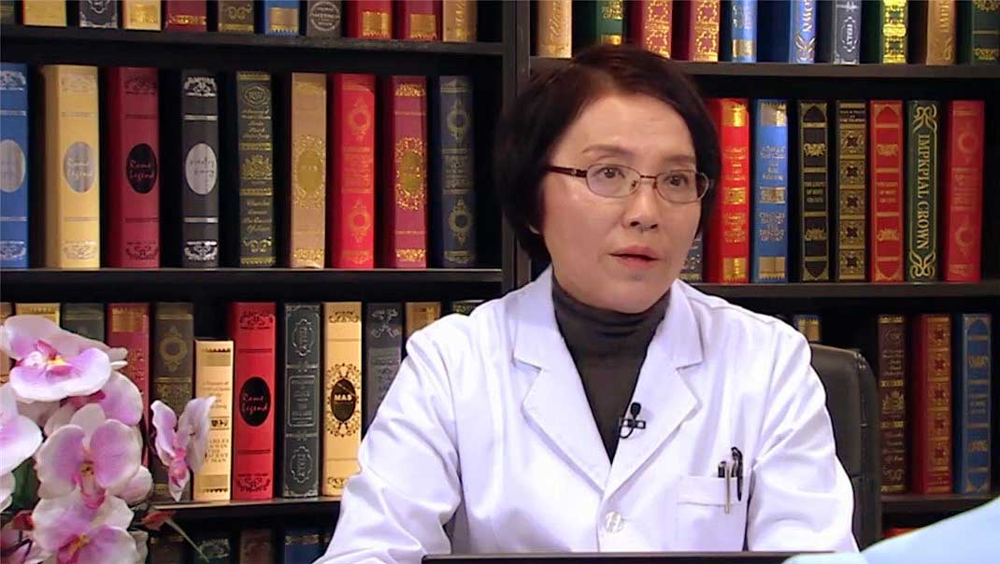

1.96 压力大与妇科疾病¶
丁辉 主任医师¶

原首都医科大学公共卫生与家庭医学院儿少卫生与妇幼保健学系主任 主任医师；
中华中医药学会亚健康分会副主任委员；中华预防医学会妇女保健分会副主任委员；中国心理卫生协会妇专委常务副主任委员兼秘书长；中国健康促进基金会妇儿专委会副主任委员；人类辅助生殖质量控制专家委员会委员。
主要成就： 曾获国家进步三等奖一项、北京市科技成果奖三项、卫生部科技成果奖二项、国家级科技成果奖一项；多次被邀在北京近800个大中型单位举办科学保健讲座；发表过约88篇学术论文，主编生殖健康及妇幼保健31本学术与科普专著，是国内外多本杂志的编委和审稿人。
专业特长： 擅长妇产科与妇幼保健医学、营养医学与身心健康医学。
为什么治疗很多妇科疾病需要找到“压力源”？¶
我们在临床当中，我们发现妇产科的很多疾病，源头是什么呢？
就是我们的环境，对我们的影响，或者是我们生活中的一些事件对我们的影响。
那么生活事件是什么呢？就是比如说家里突然出现了一个大的变故，父母突然有重病，或者有的突然死亡了，那么这个是不是大的事件呢，那我们在评分当中，我们在健康压力的评分当中，我们这个分是很高的，达到了一百分以上，那么这样的情况，我们患病的概率达到了75%以上，这种的就叫重大事件。
还有没有其它事件呢？当然有了，比如夫妻之间总在吵架，这算不算事件呢？那算一个慢性的一个压力事件，每天都要遇到，或者隔三差五就要遇到。那么这种事件，会慢性的影响我们的心情。
所以精神将是一个，现在过去叫无形的东西，实际上现在我们的研究是有形的，精神就是物质，物质就是精神，难道不是吗？我们的各种荷尔蒙难道不是物质吗？它刺激我们的所思所想，难道不是物质吗？其实物质和精神，我们更应该关注的是无形的，表面上看不到的世界，而不要老是对疾病，进行一个治标不治本，所以我觉得今天的话题特别特别的重要。
我说的意思就是我们看不到的世界，但它本身是有形的，它是用纳米的来衡量的。纳米级的来衡量的，都是有形的，都是物质，只是我们感受不到。
我们感受的就是焦虑、不舒服、不愉快、不开心，我们感受到的症状就是，我们女性就是月经紊乱，突然发胖，压力性肥胖。那么突然的觉得自己，这个生育特别困难，老是复发性流产，这些虽然尚待研究。但是很大的因素，跟心理非常有关，还有不孕不育，更年期的妈妈的这种暴躁，或者叫做急躁，这种更年期，一来，你更年期了，什么意思？
她的情绪把控不了了，这些都跟激素的水平有一定关系，但是更重要的是身心不调达，不和谐，我们需要的是，把压力源要控制压力源，要认识，要认识这个世界，认识自我，要正确地认识自我，同时正确地认识环境，这是非常重要的。
所以我们万事要找到源头，来克服那个源头，而不是仅仅是吃药，吃药是管你的标，而不管你的本，本还是我们要找到压力源， 我们叫压力事件。
如何来处理，这个还得要慢慢的去解读它，那么它的处理当中，实际上很大的一个，我们对环境的一个认知上，我们要有一些新的想法。
比如家里发生了这个事件，生命当中遇到一些不愉快的事件，那我们首先就要有积极的态度，来去看待这样一个发生的事件，一个是我们不能悲伤过久，同时我们在和医生的相互的配合当中，要抱着积极的态度，而不应是消极的、悲观的，或者是总是困扰自己，饭也吃不下，觉也睡不着，这样的话，我们对这个生命的维护，就发生了很大的问题。
那我们看到的很多临床上的很多的朋友，当发生一件事的时候，他的认知总是消极的，或者是悲哀的，或者是焦虑万分的，那么这种情况，常常会治不好病，反而使疾病加重，那我们这个里头，就是我们的紧张，我们的压力，我们能不能去调试它，我们能不能去认知它，而不是一种扭曲的认知，一定是在生活层面，价值层面，我们要深刻地去认知它，正确地处理它，这是非常重要的。
女性压力过大也会引起妇科疾病吗？¶
这个也是我们当前正在研究的一个领域，国际上对这个问题研究非常的多，那么压力会给我们很多人造成很大的一个反应，首先我要知道她的生理反应，当我们看到一个不良的，或者我们叫一个恶性的，或者是非常不愉快的事件的时候，那对我们的反应，首先生理上要有一个变化，什么变化呢？
就是很多的激素，我们可以说动了她的荷尔蒙了，看到这个压力的时候，我们会有很多反应，比如我举个例子，你说是恶性事件，但是比如我们见到老虎的时候，我们首先是害怕，我们有可能是看到一些不良事件，我们感到焦虑，那么这种焦虑的情绪，对我们的荷尔蒙是有影响的，那么妇科的好多疾病。
比如说多囊卵巢综合征，比如说月经不调，紊乱，这些我们看上去好像是到妇产科医院来治病，但是事实上，她有可能是在她的平常的生活当中，发生的这些事件当中，她的生理反应的时候过度了，那么过度以后，发生了她的一些不适应，或者是不舒服的感觉，是这样的。
从我个人的例子，我在九十年代的时候，我到西藏培训我们的妇幼机构的医生，来降低中国孕产妇死亡，当时我做了一个大型项目，这个还填补了国家空白，我获得了国家进步奖。
那么当时我到西藏三次，没有氧气，没有任何的，外部环境很恶劣，在这种情况下，我的压力就比较大，那么这种大呢，是生物学的环境的压力，那促使我的大脑，感受这个压力的时候，就把我的月经给关闭了，我就闭经了，回来以后又进行调整才好起来。
如何评估心理压力和抑郁的严重程度？¶
那么认识压力，我们常常就是发现紧张以后，我们会有心灵的不高兴，不愉快，我们叫心灵感冒，不舒服的感觉，那么这种感觉，常常是比如说失眠，比如说心情非常的阴暗，像雾霾天似的，吃不下饭，睡不好觉，有的女生发生紊乱，男生没有性欲，这些都是一个压力最初的症状。
那我们来认识它的时候，我们为什么持续了两三周，我还有这些症状，我们常常拿一种表格来衡量，比如说爱丁堡，国际的一个量表，那么这个量表有十个问题，我们常常要问。
第一个问题，我能不能看到一些事物的时候，是不是很开心呢？我的心境到底如何呢？这是一个要问你。
第二个，我是不是老是有乐趣的，期待下一个周期的发生，下一年的来临呢？有的人就很抑郁，不想期待下一年。
第三个，当事情出现的时候，我是不是很自责呢？总是处在一种自在的心态。
第四个，我是不是无缘无故的就感到很不开心呢？不开心就要生病，这大家应该了解。
第五个，我是不是经常的无缘，没有任何的原因的情况下，我就感到害怕恐惧焦虑呢？这个都要问自己，要自评。
第六个，我是不是很多事情，冲着我都来，都是让我透不过气呢？就是我的节奏，没有节奏感，成天被压力压的我喘不过气来，非常被动，是不是这样呢？
还有，是不是我很不开心，经常失眠呢？
再有，我是不是经常感到难过和悲伤呢？不知情的我就感到，没有任何理由的感到悲伤难过呢？
我是不是经常不开心到哭呢？经常要哭呢？这些都是理由。
最后，我是不是想到要自己伤害一下自己？割腕，有的孩子就割腕了，我们看到最近我有几个患者，青春期的，他就有这样的想法，所以在这种情况下，我们再这个评分，都是偶尔发生都是1分，两周之内，经常发生两三次这样的情况，那我们就要给他评分。
那么总是发生，那一天到晚老发生，那么两三天就要发生一次，这个频率，那我们就要评分就更高了，那我们超过九分怎么样呢？就是可疑的一个问题，需要到医院来找丁医生来咨询一下。
那么到了9分以上，10分，12分，13分，那我们就要更加关注了，干嘛呢？要去到医院，特别是精神病院，我们要去进行深度咨询，那么有可能有的朋友，就有这样的一个家族史，这样一个精神病史，这种人是尖尖角，是很少的，不是很多的，大多数都在第二层，第三层，这样一个情况，在这个时候，我们希望的是，进行一些心理的咨询。
分比较高的情况，我们一般希望他用药物治疗。
为什么压力过大也会引起身体的疾病？¶
这个问题问的很专业。那么我们说是这样的一个过程，就是当我们发生焦虑抑郁的状态的时候，我们就启动了身体的压力系统，开始我们先是压力刺激，刺激了大脑，我们先看见听见，包括有些噪声也是压力，我们看见听见，我们想，那么这种过程，就启动了我们的压力系统，我们叫内分泌系统，你听到一个词，我们叫内分泌，现在这个科室特别火，说明什么呢？
老百姓已经心知肚明，我的内分泌紊乱了，内分泌的最初的神经系统，就是我们的大脑神经系统，神经系统的介质递质要释放，释放以后，引起我们的靶器官，像甲状腺，像我们的妇科的这些卵巢、子宫，像我们的其它的心血管的这些系统，这里边都有很多的激素，我们身体有很多种激素要启动。
比如胰岛的激素要不要启动？当然要启动。比如甲状腺素要不要启动？要启动。我们妇科的我们的雌激素孕激素要不要启动？当然会启动。
它都会这个一键就把这个系统都给它激活了，激活了以后，就大量的分泌（激素），那么如果我们的压力持续性地来刺激这个系统的话，我们不愉快，应该两周以后解除，可是解除不了，怎么样？老在悲哀，焦虑，恐惧之中生活的人，慢慢慢慢的话，这个系统就成为一个我们叫思想的习惯思维，习惯思维以后，它总是在耗竭我们的激素，那我们出现的是什么？
失眠、便秘、胃肠不舒服、头疼、妇科的月经紊乱，这出现了，它就是这样一个机制。
长此以往，你处在负性的压力事件当中，你的身心就会不调达，就会发生问题。
比如我们的动物试验，我们这个小老鼠，一组给它电棍，给它大灯的刺激，不给它吃饭，不让它睡觉，那么这个小老鼠变成一个黑色的小老鼠，皮毛都会变化了，这是一个不良刺激的反应，这个小白鼠试验，在四十年代国际上就有研究的，斯坦福大学，哈佛大学都做过研究，我们中国也做过研究。
那么一组小白鼠，给它一个良性刺激，比如给它按摩，给它很好的音乐，给它每天喂食，这个鼠宝宝长得就是皮光皮亮，最后生出来快乐的小宝，人类也是这样，人类跟小白鼠的很多的基因都很相似的，我们人类，如果老处在不良环境中，可以想象，会有好的结果吗？
不会的。
为什么压力大、过劳和脾气暴躁会引起猝死？¶
我常常跟老百姓在讲课的时候，我常常讲，我们不要随便动我们的奶酪，我们奶酪是什么，就是荷尔蒙，我们反应，在任何事物反应的时候，稍微放慢半拍，不要反应太快了。
比如爸爸妈妈说你一句，你马上就反应，不是这样的，他在跟你的沟通过程，可能我们的形式直白了一点，但是他的心是好的，所以我们作为儿女来讲，首先是一种孝，一种对爸爸妈妈的一种感恩，那这种心态的话，你就会反应不是那么样的口诛笔伐性的反应，我们反应过快以后，就会轻易地动荷尔蒙，所以荷尔蒙动动动，就少了。
你看压力特大以后，荷尔蒙少，它还会分泌，还会刺激我们的器官分泌，但是我们的荷尔蒙它是慢慢慢慢的成长的，通过我们的衣食住行，特别是吃，它要进行一些运作的，那我们老是耗竭，我们像一个油灯似的，一个油灯老耗竭怎么样，慢慢慢慢就燃灭了，什么叫猝死，老燃老燃就熄灭了。
那么我们在大街上也看到了很多的朋友，一点小事就开始暴躁，开始吵架，甚至倒地，发生心脏猝死都有，这个就是什么，都是荷尔蒙，当你的愤恨的时候，大脑有一个指引，荷尔蒙要释放，要适应这种拿起棍子要打别人的这种状态，这种状态当然是犯罪了，但是这种情况为什么是发生？
是大量的荷尔蒙释放，那么他的心脏猝死为什么发生？大量的荷尔蒙释放，使我们的血管阻塞，血管使劲地收缩，血液过不去，的我们叫猝死的这个情况，心肌就变性了，没有血液，它不就变性，最后导致死亡了，所以你人不能过度的疲劳，过度的暴躁，这些都容易引起问题。
大脑和心脏是最重要的，它能维护你的生存，那么维护你的生命，它首先关闭的是最不重要的器官，那就是我们的第六器官，它要受大脑和心脏的指引，所以我们维护大脑心脏，维护我们的内分泌系统，这是最重要的，不要轻易地动奶酪，这是我今天说的很重要的一句话，轻易地动荷尔蒙。
人体是一个平衡态，我们内分泌也需要平衡，人体、社会，包括我们的家庭，都需要平衡，和谐，这个非常重要，包括我们的内分泌也要和谐，平衡，那么如果不平衡，不和谐的话，就会耗竭过量的释放一些压力荷尔蒙，那这样会引起我们的不愉快，不舒服，最后引起我们的疾病的产生，是这样一个它的一个流程过程。
为什么女性容易受情绪影响？¶
这个就是老百姓应该都特了解，女性的大脑比男性小大约8%，那这个大脑小并不见得智力不好，我们现在看到高校，特别是博士，女生为多，这跟智力没关系，现在还在研究。
但是我们有一个部位，我们的脑部有一个部位，我们（女性）要比男性要大，那就是情感的部位，感受情感，感受别人的眼神，感受情绪变化，要比男人敏感，男人他是一个理性的，很多科学家在最高的科学家里看不到女性，因为女性的逻辑方面，要比男性稍微次之一点，女性在语言、艺术，她就比较发展一点，这两个目前还在研究当中。
那么这个到底是什么原因引起的？
我们还没有任何的结论，但是我们看到一些现象是不太一样，所以我们要利用女性的这个情感的感受力非常强的这个，来关心人、理解人，我们叫做对家庭的贤惠，对孩子的温柔，对丈夫的温情而待，以温情相待，就是我们相互要以温柔的感情来相待对方，这是非常重要的。
这也是促进我们的荷尔蒙和谐的一个办法，当我们以笑脸，以温柔的面容出现的时候，对方也会非常高兴。
为什么有的职场女性会感觉“压力山大”？¶
我们应该说有一个词很重要，就是认知重构，我们为什么感受到压力，我们认识世界的能力，每个人是不同的，实际上我们很多压力都是主观的比较多，实际上我们应该对我们的认识世界的能力要提高，认识自己和认识他人的能力提高，比如我这里准备了几个题，我们女生为什么“压力山大”，老百姓他也说我特“压力山大”，年轻人也爱说这句话，压力特别大，为什么？
首先一个，我们总是有一个叫赞同需求，那么就是你总是在想，别人怎么看待你，怎么判断你的价值，别人要赞同你、爱你，你才OK，首先这个就容易造成压力，赞同需求，我们不应该这样，你自己应该有自信，这是第一点。
第二个，我们认知重构，自我的期待不要过高，现在很多大学生去做美容，整容，希望获得更高的职位，更高的一个事业的发展，这个没有错，但是我觉得更重要的是你自己的自身价值，你的技能技巧到底是什么，就是不要太关注表面的，期待有的时候过高，未必是最好的事，我们叫成就导向是错误的，成就要不导向了，没有成就了，你就郁郁寡欢，这是第二个。
第三个，我们叫做依赖性，你总是干什么事情，总是依赖他人，那么在人家不能依赖的时候，一下子你就崩溃了，这是第三个问题。
第四个，我们就是老要求公平，实际上我们在工作职场中，常常是不公平的，可能上帝给你关了一个窗，可能又给你开了一个窗，所以我们要积极地面对这些事物，就是不一定是公平的，常常是不公平的，那么我们要认识这个世界。
那么还有就是，我们干什么事容易逃避，一到困难就逃避，那么更大的困难来，他就压力特别特别大了，所以我们的逃避心态，也是有的时候是要进行和谐的对待的。
还有就是完美主义，我们对事物，总是要求完美，我们看到很多电视剧，有时候不太爱看了，总是在说老公，或者老公总是在说太太，实际上我们更多的应该看到的是亮点，看到的是它的正能量，可是总是从侧面，总是从不良的方面去看认知，这个认知也得重构，重新建构。
还有容易发生的就是极端，今天不亮，明天可能就亮了，每个人是不一样的，人生的轨迹不能求同，要存异的，有的人在三十岁能够成长出来，有的人在三十五岁，有的人在四十岁，有的人婚姻在二十五岁自由恋爱成功了，非常棒，有的人三十五岁结婚也不差，每个人的人生的节点是不一样的，应该跟自己比，不要跟大家比。
这是我对职场女性的一个特别大的一个期许，也对自己也是一个要求，我们对孩子，对什么（事情），不要这样子去强求。
还有我们不要夸大，或者是缩小对事物的一些看法，这个也特别重要，有的时候有主观主义，反应不要太快，要好好的向男生学习，多有一些逻辑思维，不要老是情感思维，没准他对你的一个刺激性的一个话，没准他出于好心，他并不见得是一个不好的一个方面，是这个意思，所以我们说女生，首先我们在职场上，要给大家一个劝告劝慰，看起来很小，实际上是我们的心灵的碰撞，是什么呢？认知重构，正确地去看待自己和他人。
之后我想接下来还有一些，促进我们的更有正能量的思维，我们毕竟是人体是生理和心理的一个结合，首先我们要在饮食上，在运动上要加强一些，那么你心灵的这个疙瘩解决的话，正如你刚才说的，我好像觉得开了窍了，那好，我们就可以加大一些营养的促进，加大一些运动的指导。
什么是缓解压力性肥胖的“抗炎食谱”？¶
如果一个人压力特别大的，特别是有压力性肥胖的，我们就要注意，压力性肥胖是什么呢？
是一种炎性的表现，炎性就是我们的无菌性的炎性，因为你老在释放荷尔蒙，荷尔蒙要刺激血管，刺激我们的胰岛，刺激我们的一些内分泌腺，那么这些腺，就要有一些炎症，这些炎症有时候临床查不出来，它是一种刺激造成的，它并不是细菌，它是一个无菌性的，那么在这个时候，我们就会慢慢慢慢的有一种肥胖，肚子这块，出现了一个游泳圈，那么在这个时候，我们怎么办？
我们就要对食物要进行挑拣了，我们叫抗炎食谱，抗炎食谱它是一个三角形的，我们叫金字塔形的。
那么在最底下都是一些蔬菜水果，粗米粗面，鱼，还有一些我们叫Ω-3，我们叫DHA这些东西，那么这些东西都在鱼的身上多有，我们要吃鱼，吃我们的白蛋白，我们叫脂肪少的蛋白，比如说鸡肉少不少，少，它主要是蛋白质，那么鱼是不是，鱼是，或者我们吃的一些肉类，瘦肉，它的蛋白质加大，脂肪减少，这是很重要的。
还有多吃一些蔬菜水果，我们到商店买面包的时候，我们要怎么样呢，要吃一些粗米粗面的面包，不要老去找那个白面包，上面糖裹着，椰丝裹着特别多的，奶油很多的，我们都不主张压力性女性，觉得自己很敏感的女性，去吃那些东西，尽量的少吃。
那我们麦当劳能不能进？肯德基，披萨饼店，我们要适度地进去，不要老在那里形成一个生活习惯。那你这些油炸的食物到体内，就会刺激那些荷尔蒙出现，就会增加代谢的这种功率，代谢的东西加大了，本来你的压力减下来了，结果你把代谢加大了，那荷尔蒙还在释放，在这个方面也要稍微注意一下。
就是说吃一些抗炎的食谱，那我们说抗炎的都是粗米粗面，加上我们的蔬菜水果为多，加上一些我们的脂肪少的蛋白质，这样也是可以的，适当地换换口味，我是不反对的，一年吃几次红烧肉，吃几次大白面包我都不反对，但是作为我这个年龄组，还得要注意我的运动，运动我主张还是快走，因为这是成本最低的，而且我们最能做到的，每天要走三千到五千步，这是最低标准了，这个是非常重要的。
我们更重要的，我们每周都要有休闲，有的人说休闲我懂，但是你要知道，休闲要作为一个常态，作为你的思想当中的一个常规的任务，是不是每个人都能做到，那我们说每周的休闲，到哪里去，到海边去，到山里去，叫什么呢？负氧离子大量的吸纳，那促进你的有氧代谢的，需要你的心境的豁达开朗快乐，这个都会调试我们的心灵。
心理压力是如何影响职业女性身心健康的？¶
在心理科学当中，关于压力、关于我们身心健康，一共有50多个分支，我们说压力应激，应就是答应的应，激就是激惹的激，在这个当中的意思就是说，压力应激就是我们的个体受到生理、心理，还有我们的情绪受到威胁时的一种体验。
比如我们见到一只大老虎，我们的体验就是一种恐惧，这个就是有一种压力来了，这种它导致一系列的生理、心理的反应，最终这种慢性压力应激，如果一直在我们身边搅扰着，这样慢慢的会影响我们的内分泌、免疫系统，这个情况就是一种压力应激。
你刚才问到女性压力应激，这个问题问的特别好，我们在座的都是女性，我们女性现在在中国走向社会的人非常之多，做职业女性的大概达到85%，有三分之二的人都在社会上来迎接各种挑战，她必然会受到自己的价值观、社会的价值观，以及我们内心一种对各种事件的反应。
比如王小红，王小芳，王小莲，三个朋友都是医生，都已经可以晋升为主治医生，甚至有的人都可以达到副高，但是我们只有一个名额，只有王小芳能上，那两个朋友就遭遇到一种压力，非常落寞的一种感悟，这种感悟很快得到家人的理解，得到自己朋友的理解，通过聊天、放松，甚至通过游泳，通过跟自己的闺蜜、爱人进行沟通以后，可能就会慢慢的缓解，这种压力我们叫做一般的事件，这种事件一般不造成人生大的一些疾病。
但是大家想一想，如果这类的压力事件越多，我们再遭遇一个家庭的变故，同时女性又遭遇到上司一种不公平的待遇，我们公司的朋友有的时候经常跟我说还有性骚扰，性骚扰也算压力，这些都属于压力的范畴。
这种东西如果说在我们的价值观当中，一直是持续有这样的现象、这样的社会事件存在，就会使我们造成一种长期的困扰。
那么大家想一想，长期困扰之后会引起什么样的变化？我们的内分泌会缭绕到我们的睡眠。
久而久之，日子越来越长，可能三个月这个东西还没有被化解掉，就会引起我们慢性的压力应激。
男性也会受到滋扰，但是我们女性的反应比较敏感，她大脑的结构导致了我们女性对情感的东西非常敏感。
所以女性的人际关系会调整好或者是自己搞得不好，应该首先从自己来找原因，是不是你过于敏感了，你的心就像一个针一样，那么一碰，你就来回的动了。
那要这样的话，你就永远会浪费你的荷尔蒙，荷尔蒙就是我们人体激素的概称，人体有几百种激素，我们女性的内分泌是非常丰富的，它是为生育做准备的，如果经常滋扰到我们的事件，滋扰到我们内心，干扰到我们内分泌的话，我们内分泌就呈现一个耗竭。
有人说我不知道什么叫耗竭，我简单的讲，比如我们遇到一些不舒服的事件，你发怒或者是悲伤，在这种情绪滋扰你的时候，你常常会有一种耗竭，那么比如说愤怒以后，你会觉得浑身发软，甚至哆嗦，有的女性还要哭，女性从另外一个角度讲她会宣泄，但是总的来讲，她的大脑结构比较敏感。
在这个里头，女性滋扰以后就会产生内分泌的毛病，比如多囊卵巢是不是内分泌毛病，当然是了，子宫肌瘤算不算，算，那么我们更年期，这个不是病，为什么我们那么多症状，这个跟你的情绪也有关系，跟你的身心不调达也有关系，跟你的周围的压力、你容易被激惹这些特点都有相关性。其实我们现在的医学，既然说它前沿，就是它是生理、心理、社会三个环不能少，另外我们的疾病造成，跟我们的环境、道德、价值观密切相关，所以这五环还是要有的，而不是一环。
过去我们讲得了一个病，比如子宫肌瘤，我们就切切切，现在可能我们会想造成子宫肌瘤的前置因素到底是什么，这是我特别关注的。
为什么女性更容易感觉到“压力”？¶
她不是过大，她是反应很灵敏，女性情感脑比较发达，她的右脑比较发达，她对艺术、语言、对我们世界的这种情感方面的感悟，比如有些电视剧，那里边的电视剧的女主人公，或者男主人公悲伤了，可能我们女性在看电视的时候就容易情随境动，男性可能人家压着，就完全是理性思维，男性比较重视事件，这个事是怎么来的，这个逻辑思维比较好，女性她是情感思维比较超前，在这种情况下，女性就感觉压力比较大。
另外女性，她有生育的功能，中国女性她家里外头都是一把手，有一个国外的妇产科专家曾经跟我说，她说我认为女性的压力大，因为她们的职务特别多，她说你看，遛狗、家里的洗菜工、家里的购物者、家里的营养师、带孩子教育都是她，另外还有时候还得照顾老人。加上在国外的生活条件下，有的人还要伺候花园，花园剪草，什么时候买虫草剂，买什么牌子的，都是我们的女性来完成。
有时候女性也要开车，还要加油等等，她所担当的这个工种非常之多，也是个多面手。
在工作中是不是也是她，又搞计算机，又得看病，又得主持，又得去护理，方方面面的事由，这是不是都是女性为上。特别是在中国，85%的人都走向了我们的职场，所以女性职场心理压力的应激，就变为一个非常重要的环节。
（采访）就像您说的，女性她的右脑比较发达，这是她生理结构决定的，同时现在女性又更多的走向社会，走向职场，她们的社会角色又非常多，在这些角色的切换、扮演中都会有各种各样的压力。
没错。
我最近在德国发表了两篇关于心理压力文章，我调查的中国8000多个大数据，最后有效数据是6842个大数据，那么在这个数据当中，我们分析了人的压力，特别是女性压力很大的五个职业，有教师、医生，同时有我们商场的管理人员，还有企业的管理人员，还有银行工作人员等等，在这些的中高层的管理人员当中，心理压力对内分泌的影响跟身心相关性非常大。
RR，我们叫做相对危险度达到2.48，说明有一个非常紧密的关联性，这个在世界也是挺引起轰动的。
就是说国际上现在已经非常关注中国人在社会当中的角色，社会事件对我们的身心影响也都非常关注，因为它们俩是有必然联系的，我们要引起全社会的关注，男人、女人、老人、小孩都要关注。
女性心理压力过大有哪些表现？¶
当我们的心理压力过大以后，它首先就是滋扰了我们三个方面，我总结三个字：食、便、眠。
第一，我们先说说眠，我们在心理压力大的时候，身体有一个自保功能就是失眠。
有人说失眠不是坏的现象吗，我说那你说错了，失眠在最初是身体对你的一个提示，你心里有事儿了，同时这个事儿干扰到你的大脑了、你的价值观，所以你睡不着觉，那么在这个时候我们常常要问自己大概是什么事儿呢，解决了这个问题我们就好了，但是如果延续了两周、四周、六周、八周你还不好，真的很需要警示了，这第一个方面。
第二个当我们心理压力大的时候出现就是便秘，大肠不工作了，现在我们的前沿科学里，特别讲究的就是大脑和肠道的肠脑循环。
我们的肠道跟大脑是密切循环的，有这种科学的理念，国外每年都有几百篇这样的文献，顶级杂志，就说我们的大肠没有气力把大便推送出去，这个时候跟大脑很相关，大脑压力大的人就容易便秘，甚至便溏，就是一天拉好几次，这样也不好，对身体的耗竭非常大，那个毒素自然而然从肠道的黏膜吸收到人体了，所以便也是一个征兆。
还有就是食，我们吃不下饭，当我们心理压力大的时候，老百姓感觉我今天生气吃不下了，大脑兴奋的时候，特别是交感神经过于兴奋的时候，就会让我们不愿意吃东西，甚至男生就爱点小酒，女生有这样的现象，有时候抽烟、喝酒，这种会滋扰我们内分泌。
所以抽烟、喝酒，就是我们行为的改变，甚至大哭大闹都是我们的行为的改变，她首先吃不了饭，日趋一日，没有营养，到六十多岁，有的人说我得癌症了，我抗感染能力差了，我感染了HPV（人类乳头瘤病毒），它是对宫颈癌非常严峻的一个相关联的病毒。
这个病毒在侵犯人体的时候，它一般在一两年内就消除了，为什么有的人还持续呢？跟她的免疫力非常相关，大家一定要知道，要检点你的前置因素，生活行为，包括你的性行为，还包括我们的食、便、眠。
夜里老工作的朋友，当然容易使我们的内分泌失常，像空姐，还有我们的护士。所以我回答你这个问题，首先就是三个问题。
女性心理压力过大时，如何简单进行自我调整？¶
当我们的心理压力过大以后，它首先就是滋扰了我们三个方面，我总结三个字：食、便、眠。
这三个问题怎么造成的呢？就是压力，压力我想总结三个字就是气、急、累，生气、着急、劳累。
气、急、累非常容易体现到我们食、便、眠的下滑，它的前置因素就是气、急、累，如果说一个人平平静静，突然食、便、眠都失常了，那我觉得这个病人我迄今还没有看到。
在我的咨询中心，很多朋友哭的时候，一问都是前置因素，被气着了，或者是太劳累，同时又生气，还有的人急躁，经常遇到特别急的事，这样的话都会滋扰自己的内分泌和免疫系统。
我们说气着了这句话，我一定要反转一下立场，气急了是老百姓说的，我问患者被气着了，是谁让你生的气呢，她说是我们家那位、我妈妈、我爸爸、我公公等等，我说主要是你自己，因为生气的来源多种多样，但是你生气是因为你对这个事件进行了一个反馈，进行了激惹，这个事件本身是可以屏蔽掉的，你被这个事件给控制了，他让你生气你就生气了，可不是你自己生的气吗？
交感神经、副交感神经都是你自己生完气以后，主动的提升了它特别大的一个兴奋，这样是对你不好的，内分泌压力荷尔蒙大量的释放，压力荷尔蒙都是战士，大量的释放以后，浑身哆嗦，这是你自己释放的，你自己没有控制好自己，我的健康我做主，虽然表面上都在说我的家我做主、我的健康我做主，但是事实上你没有做主，你让别人做了主，就是别人让你生气你就生气了，所以我们女性特别应该树立自己的保护层，就是自我保健、自律，这样的一种意识很重要。
我们还可以有一些小的生活转变，比如我们过去不喜欢音乐，一定要听音乐，听相声，我们会多有一些快乐。
我的门诊对不孕不育、对这种流产、复发性流产的患者，最近还有一篇文章，我特别提倡我们的妈妈每天要大笑一次，她说你这个都给我编成指标了，我说对，每天大笑一次，她说我笑不出来，我知道你笑不出来，但是每天要营造自己大笑一次，怎么笑呢，你找一个幽默的朋友，还有你可以看相声，相声就是药方，可以看你最逗的那些搞笑的喜剧。
我们现在小朋友都知道学习压力大，看搞笑的很正确，我有一次也是坐在高铁上，有个小朋友我问他最喜欢的是什么，他说学习压力太大，喜欢搞笑，我说太好了，我说你会调节自己，就是每一个人都有自保功能，他会调节自己，所以我建议大家都要搞搞笑，多幽默幽默，对事物看法要看的更深、更远、更广、更大，不要老围着自己转。
还有的朋友释放压力，就是大量的爱心付出，扶贫去，自己的价值观体现出来了，那很好，我们多去扶贫，也是一个好办法。
我们有多种多样的生活模式，还有旅游也是非常好的，我们每年都要安排一到两次的休假，我们有这么多节假日，很多人就猫在那儿睡觉，那是不行的，要动起来，才能减压减起来，所以锻炼自己一个大自然的融入感。我们现在非常提倡的就是融入的成熟、融合的成熟，而不是说都是成功学，都是失败学，这是绝对应该避免的，我们应该平衡的对待自己，对待这个世界，平衡的对待他和我。
同时我认为减压的这一课，还有压力和内分泌的这一课，以及我们情绪健康，是每一个人一辈子都要修的功课。
压力荷尔蒙会给女性带来哪些危害？¶
第一个，我们压力当中有大量的内分泌素要释放，在释放当中有个叫可的松的压力荷尔蒙，压力荷尔蒙分泌出来以后滋扰了我们内分泌，首先它是抑制你葡萄糖的有效代谢，同时它会分解我们的骨头，身体组织的这种细胞分解，那骨质疏松就增加了，有人说我骨质疏松了，对不起，你压力太大了，给自己弦绷的太紧了。
第二个，它会对蛋白质吸收的抑制率高达70%，你说压力对我们无所谓，人无压力轻飘飘，你这个认知是对的，但是你不要过度压力，你过度的去感受它，过度的把弦绷的过紧，另外过度的受激惹，一挑你，你就火了，那就要耗竭你的蛋白质吸收率，你的抑制率就达到70%。
第三个，它引起你的脂肪摄入到血液当中去，这时候脂肪分解，时间长了以后脂肪是不会消耗的，它是一个积累，因为你又有压力又过来，它积累，积累以后，尤其在腰部和臀部慢慢的发胖，腰腹部肥胖，再加上我们有的人爱喝点啤酒，那腰不就更胖了吗，肚子大，这主要是男士。
第四个，它会引起神经细胞，尤其是我们的记忆力，叫海马体，这个记忆细胞这块逐渐失去它的有效性，慢慢记忆力减退，思维模糊，本来我记得那个同学应该叫王小红，可是我就想不起来，只知道她叫个红，不知道她叫王小红，还是李小红了，常常断片，这种常常出现。
再有就是损伤我们的免疫系统，最厉害的免疫抑制剂就是我们的压力荷尔蒙，有人说我的HPV（人类乳头瘤病毒），生殖道永远在感染，这个不要老去治标，我一定要给她治本，什么原因引起的，我一定要问，我说把你爱人叫来，我要问一问你们深层次到底怎么引起的，这个跟行为很有关系。
还有我们的凝血细胞，在大量的压力荷尔蒙之下，它就不走动了，它就耗在那儿了，细胞都要紧起来，紧起来以后堵住我们的冠状动脉，我们会得心脏病，冠状动脉实际是冠心病一个直接供血的渠道，你给堵住了怎么办。
还有就是有的人就是说心脏病，就是他的血管壁薄，血管突然就爆裂了，因为她长期有炎症，免疫力下降，有炎症，又有一个大的生气事件来了，嘣就破裂了，为什么我们急诊室大量出现这样的猝死，这些都跟你弦绷的太紧，气、急、累都有关系。
（采访）看来这压力荷尔蒙真的是危害多多。
当然。
长期心理压力大，会使女性更年期提前吗？¶
这个又是另外一个内分泌的问题，当然会引起女性更年期提前，因为我们的更年期的到来，是人生的一个第二个转折期。
我们北京的调查是42岁-53岁之间，发生了更年期是很正常的，那么更年期是不是病呢？你认为是病吗？
（采访）我认为不是。
对，更年期并不是病，它是一个时期，我认为更年期就是一朵浪花，一朵涟漪，这个东西会有一些不良的症状，比如浑身出汗，比如脸颊经常泛红，突然嘣嘣嘣的心跳，因为在更年期，她是一个从青年的生殖到老年生殖的过渡期，所以我们先天的人体到一个阶段就要有一个句号，人体的生殖功能是句号了，雌激素水平下降会引起一个大脑的波动。
大脑波动就是大脑的司令部接到这个反馈，它会自动的给你进行调节，人体就有这个功能，它叫自保功能，仍然保持你女性美美的那样一个人，虽然你有皱纹，但是你更加的成熟了，所以这时候司令部会有一个调整期，一般是半年到一年的调整期，有的人两年的调整期，慢慢慢慢我们会过去。
当然大概有30%的人是需要到医院来，她症状比较明显，需要到医院来诊病，她在那个时候经受不了这种考验，这个浪花就把她给打倒了，如果这样的话，我们应该有药物给她进行支持，这是可以的。
但是我特别鼓励更多的女性，从自己的健康的身心当中去找原因，继而加强自己的精细保健，来度过这个艰难的，或者你认为艰难的过程。
我不这么认为，我认为第二青春刚刚开始，第二青春就是我们没有了生育这样的一个负担了，我们在事业上、旅游上、生活中有一个新的篇章开始。
（采访）您刚才说的更年期的一些症状，更年期如果说由压力过大导致的更年期提前，需要治疗吗？
这要到我们的压力门诊来，需要治疗的话看你是什么原因了，更年期是正常人成长的一个正常的时期，这不是病，但是你更年期，如果得了瘤子、发生了瘤子，发现了卵巢、子宫的问题，发现了自己内分泌的其他症状，我们内分泌有很多指标，发现了甲状腺、骨质的问题，都可以到医院来求医，有的时候有点小骨质疏松，我觉得可以用食品就解决掉，尽量用一些营养来调整自己。
引起抑郁症的相关因素有哪些？¶
抑郁症现在还没有完全探索清楚它的机制，但是我们大概解了一部分，我们看到了它冰山上的一角。
它的特点就是有生物学因素，比如人格的特质，爸爸妈妈爱急躁的人，孩子也容易急躁，有遗传特质，有我们的应对方式，我们心理防御机制都跟你的人格有关系，过于内向的人、过于外向的人在应对压力的时候，他表现的行为是不一样的，所以我们生物学特征是不一样的。
第二，我们有一个圈就是心理因素，比如说我已经是个老医生，资深的医生了，我经历了很多的困扰，那我现在可能遇到一些压力，就没有什么太大的反应了，可是年轻人不一样，年轻人遇到从来没遇到过的压力，像老虎一级的压力，肯定要把我打坏，人和人是不一样的，心理的防御机制也是不一样的。
再有就是我们的社会环境因素，如果在一个特别暴力的社会，特别像不公平的社会，那就有可能是我们自己产生了不舒服的感觉，像我们现在中国这么和谐的社会，这样的一个大家庭，大家人人都有爱心的社会，可能我们会感觉很好，我们社会环境因素非常重要。
它们对我们内分泌的滋扰、对我们神经系统的反馈、对我们自己抑郁的发生发展，在不良的情绪下就会有促进作用，我们不良的情绪，一个是我们的人格特征，还有一个我们外界环境的互相的作用和促发，互相的促进，这样一个过程，而不是单一的，突然某一天发病了。
如何评估女性抑郁状态的严重程度？¶
我们现在关注的是，要对自己的疾病有一个认知，就是说有没有抑郁状态，人无压力轻飘飘，压力还不是疾病，压力是一个诱导源，是一个压力源，源头的源，但这个源是我们可能发病的因素，我拿一个量表来测一下自己，我给大家今天提供了一个量表，就是爱丁堡抑郁量表，它一共有10个问题：
第一个，心境，我们都用好、偶尔、经常、总是这样划分程度，我看到事物有趣的一面并笑得开心，你是经常这样，还是偶尔这样，还是从未这样，这个我要评分。
我欣然期待未来的一切，我也会问你，我倒是从未有过这样，还是有时候这样，还是经常，还是总是，我要有个评分。
最后我就会问负面的，当事情出错的时候，会不会不必要的去责备自己和担心，也会问你总是这样吗，还是有时这样，还是偶尔，还是从未感受过。
一共是10个问题，当你的分数大于9分的时候，你就是可疑的抑郁了，可疑抑郁的时候，我们要加强观察，要跟医生咨询。
如果我是算出来超过13分了怎么办，通过我们5年的时间，将近6年的时间，2000天的时间，我们做了中国的大数据，我们定了一个标准，13分是极有可能进一步确诊抑郁症的一个办法。
但是最后一个自伤，我要想过伤害自己这一条全盖帽，是最严重的，你只要说我总是这样，或者我经常这样，马上就要上医院来确诊，这一条就涵盖了所有，就是说她非常严重，说明她是抑郁症，已经能证明她有自伤的想法，同时有伤婴的想法，这就是最严重的了。
因此在这个时候，我们就要告诉大家，这个一个自测量表，两分钟完成，我们可以测一测，是不是不到9分，是不是你过于敏感了，这个概率在世界范围内，大概在10%-20%左右，在中国大概是14%左右这样的一个抑郁症的概率，但是真正到了中重度的抑郁障碍，那还是要进一步确诊，我们说筛查当中，可能是10%-14.7%左右这样一个概率。
（采访）这个自测表在哪里可以下载，在网上有吗？
在网上有，这张表叫爱丁堡抑郁量表，EPDS-10，我们为什么用这张表，这张表第一是简单，另外这张表全世界通用，可以比较。
（采访）通过网上的压力测试表或者是性格测试，这些测试的内容，您觉得有科学依据吗？
我是这样看的，因为我们现在提倡的是用科学的量表来解决我们面临的问题，所以我建议大家还是用EPDS-10这个量表，最简单而且科学性很强，有可比性。
那么网上的这些表，我也看过多种，有的是从科学的文献中摘录的，有的是自测的，大家就是娱乐性的一种玩耍性的对待，那我想大家有个心理安慰，也未尝不可。
但是它不是我们医学专家要求的这种量表，我们医学专家要求的是，我们把疾病筛出来，如果你没有病，你只是压力大，我们可以到咨询医生这儿来给你做一些调整，并不是纯粹的治疗。
（采访）还是要用最科学的一个量表来测。
对。
女性在哪个阶段容易产生抑郁状态？¶
我们先讲一下抑郁怎么产生的，抑郁就是你耗竭到最后，耗竭太多以后，产生抑郁和焦虑，就是耗竭太多以后，这个压力荷尔蒙、快乐荷尔蒙都耗竭的没有了，你当然会产生很难受的一种感觉，吃不好，睡不好，特别是睡不好，这是我们抑郁一个很重要的征象，更有甚者抑郁状态什么现象都没有，但他的精力完全下滑，没有精力，另外对过去感兴趣的事儿，没兴趣了，过去我对小猫、孩子、美食感兴趣，现在都是漠漠然，很冷淡，这种实际上就是抑郁的一个开端。
在一个人出生开始，到了18岁懂事的时候，到了未来，到终老的那个时间，在这个时期，我们会遭遇一个非常火爆的青春期，我们激素水平会有变化，婚育期我们激素水平又有变化，到分娩期以后，女性又会有变化，到了更年期有变化，这四个期概率发生的比较大，我们说大概有10%-15%左右，14.7%，大概是这样一个抑郁状态。
在一个人的人生道路上，大概百分之七八十的人都会有这种抑郁态，会有这种短期的，不是疾病，抑郁障碍是疾病，抑郁本身的状态并不是纯粹的疾病，她只是一个时期的一种反应，压力过大以后的一种反应，那么一般的分数，我们要测完之后一般是在13分以下的，我们是需要调整的，需要休息的。
所以这四个期希望大家关注，青春期、婚育期，还有我们的更年期和老年期。
女性心理压力过大会导致不孕吗？¶
这个问题问的非常好，不孕不育在我的门诊出现是最多的，那么不孕不育本身可以说是压力病，如果你的器官没有什么大毛病，比如输卵管是完整的，我们的生殖器官都是完好的，却不生育，那当然是跟你的功能相关，生物学功能，一般来讲不会有大的问题，当然也有畸形发生过的这种人我们先刨除在外，我们说生育功能很好，男生也很好，为什么生不出来？过度的紧张，压力过大。
在我的门诊就看过几例这样的，现在越来越多了，实际上特别希望告知大家环境，一个是自身环境，还一个外部环境，我邀约的是爸爸妈妈，公公婆婆都要来，还有你的爱人也要来，不孕不育的患者，我一定邀约的是大家都要来，我要问一问到底是什么原因，她的功能检查全都正常就是怀不了孕，好多时候都是夫妻感情没有完全的调和到最和谐的状态，还有爸爸妈妈给的压力太大。
像我们有的朋友就是，爸爸妈妈当着孩子的面指责孩子，当着医生的面也指责孩子，这就不对了，夫妻生不生育是两个人的事，他们有自己的事业，有自己的玩耍的愿望，有自己想多玩两年的想法，作为爸爸妈妈要抱孙子，给她很大的压力，这个时候两个人没想通，而爸爸妈妈压力大，这是肯定生不出来的，结果拖拖拖，变成不孕不育的人群当中。
还有的人是丈夫有问题，也变成不孕不育人群。
还有的人是长期的炎症，导致了输卵管的堵塞，这个时候也是不孕不育的一个发生，那么炎症，为什么你抗不了炎，你为什么老被感染，这个跟你的行为、接触、抗感染能力有关系，你好的人都给耗竭了，你没有抗感染能力，当然你要得炎症了，炎症以后堵塞了我们的生殖器官，我们还能生育吗？
所以我们为什么要有良好的行为、良好的心理、良好的食物、良好的运动，这个都是关乎到我们人体生物学的健康，生物体的健康有了以后，首先她取决于心理和行为的健康，这个是相互关联的，互不相分的，不能说我到医生这来就给你用药，用药也好不了，很多人用药也生不了小宝，所以我们在说，一定要把本质上的东西认知清晰。
女性压力大的时候，怎么“吃”有助于缓解压力？¶
当你压力特别大的时候，我建议是多吃水果蔬菜，加上一些植物的东西，粗米、粗面，这使我们快乐荷尔蒙成长的快一点，多一点。
特别是烤串、大油炸的，我们要少吃，为什么这样讲呢，因为你的压力很大，你自己的焦虑感也有点产生了，这个时候你再把那些吃进来，耗竭我们身体里的好多的元素，等于内外夹击，这样的话你就会更走向下坡路，所以非常不利。
在这个时候，我们应该大量的用蔬菜水果，比如说蓝莓、草莓、葡萄、红石榴，这些都是花青素或者我们叫白藜芦醇特别多的，在这个时候我们要寻找这样的食物来精致的保健一下自己。
另外多吃一些软的这些汤类的食物，这个时候我们的胃肠会得到疏解，包括我们的小米粥、大米粥这些，杂粮也要加大一点力度，这里边有好多的B族维生素，我们的老玉米、白薯，这些薯类、玉米类的东西都有很多B族维生素，B族维生素是营养我们大脑的，在吃饭的时候要多多的去夹几口，这是我的一个初步的一个想法。
还有一个我们也做了很多研究，大鱼大肉要不要吃，当然要吃，大鱼大肉最近的国际文献也在充分的去探讨大鱼大肉的问题，这些大鱼大肉也是营养身体的。
我们老百姓就要养一些家常的鸡，不喂那些激素的鸡、猪、鱼，还有蟹，我们都要去挑拣一下，我们现在生活水平高了，不要把它都花在外界，要花在自己内在的东西当中，吃就是一个最重要的安排和要求。
像我们有些女性压力特别大的时候，我们可以多吃一些汤类的，比如说鸡汤、鱼汤这些可以吃，好消化，因为压力特别大的时候，胃肠是受到抑制的，这个时候什么都不想吃，这时候我们可以喝点汤，所以在这个时候，我们说情绪的保养来源于蔬菜水果、粗粮，小米粥，那之后我们可以用一些大鱼大肉，这个我一点都不反对。
为什么女性压力越大， 越要多运动？¶
我们要加强运动是很重要的，在我们压力特别大的时候，我们的携氧能力下降，血管这时候都是聚集在一块，都堵塞了血管，我们叫早期动脉硬化的基础，就是堵塞血管以后它造成了血管动脉粥样硬化的一个基础。
这个时候要清爽我们的血管，这时候要加强运动把毒素带出去，怎么运动，有氧运动，我们要有清单，一般我主张就是有阻抗运动，用哑铃还有慢跑，有氧运动，慢跑、游泳、打羽毛球都是很好的，就是轻松的去对待自己的生活运动，每周两次是最低的一个标准。
老百姓如果说没有场地怎么办，那很简单，每天走个几千步还是可以的，半个小时、四十分钟，走走路，为什么走路就能走掉压力呢，我们的一个基础就是走路可以获得快乐荷尔蒙，这就是人体的一个自保功能。
当然有的人说我好静，我们可以做一些瑜伽，可以做一些冥想，一般是十五分钟，台湾有一个学者讲到，我们要坐掉压力，就是坐在那儿，什么都不想，完全是空灵的这种状态，训练一下自己，把压力释放到最低点，这是一个很好的方法，就是在运动。